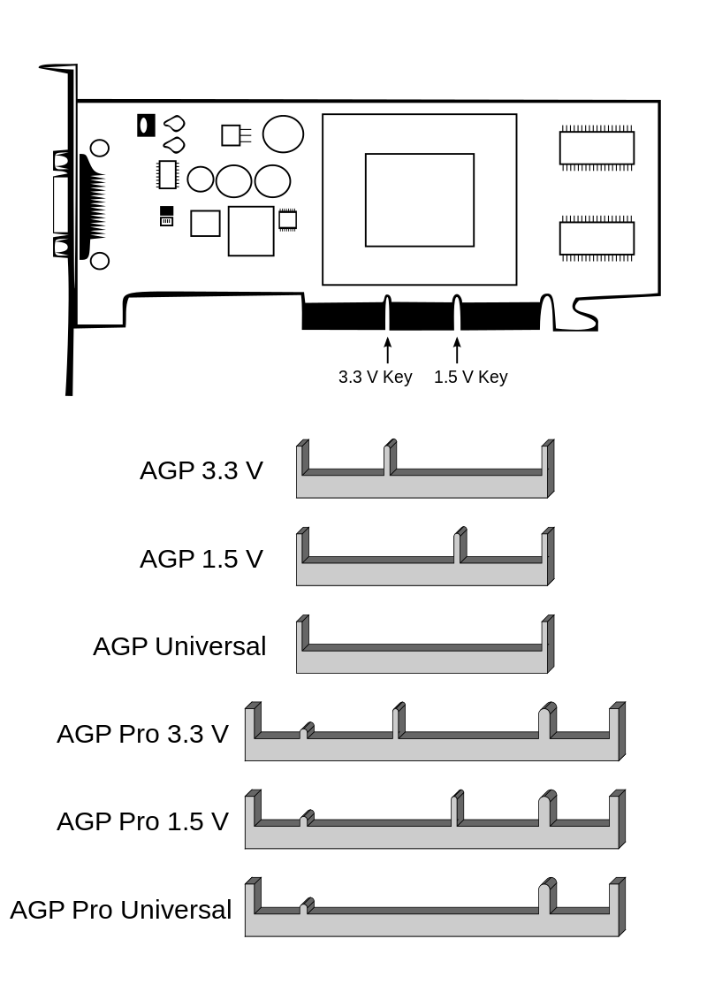

Accelerated Graphics Port
Port interne destiné exclusivement
aux cartes graphiques. Successeur pour ces périphériques
du bus PCI, l’AGP permet aux informations de circuler plus
rapidement.

L’AGP est supplanté depuis 2004 par le bus PCI Express,
capable d'interfacer toute carte rapide
(par exemple des cartes SSD) et non plus seulement
les cartes graphiques.
En savoir plus